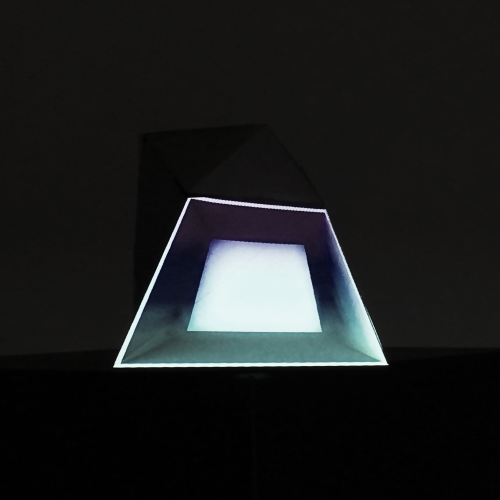

Doing Projection Mapping¶

Introduction¶
This document is a write-down for a workshop by Fabian Morón Zirfas @ the University of Applied Sciences Potsdam (Germany) as part of the seminar “Datenobjekte” (data objects) by Professor Boris Müller (a.k.a @borism on Twitter). We will explore the basics possibilites we have in the field of projection mapping. This is still work in progress, there might be 🐛, 🐉 and 👾.
Prerequisites¶
- a computer
- a projector
- Processing
- Processing Keystone library
- Processing Syphon library (Mac)
- Processing Spout Setup (Win)
- HeavyM
Note
Some of these are optional. Depending on which workflow you are going to use.
Source¶
These docs are written using mkdocs using the readthedocs theme by Fabian Morón Zirfas with ♥. See the source on GitHub.
Contribution & Issues¶
Please file any issues here on GitHub. Contributions and Pull Requests are welcome. For quick questions you can also visit our gitter chat.

Creating gifs¶
The gifs in these docs are created by transfomring a screenrecord with ffmpeg to a sequence. This sequence then gets transformed with ImageMagick to a gif. ffmpeg and ImageMagick can be installde using homebrew.
Install brew like discribed on their site. Then run:
brew install ffmpeg --with-fdk-aac --with-ffplay --with-freetype --with-frei0r --with-libass --with-libvo-aacenc --with-libvorbis --with-libvpx --with-opencore-amr --with-openjpeg --with-opus --with-rtmpdump --with-schroedinger --with-speex --with-theora --with-tools
brew install imagemagick
You should be good to go.
ffmpeg -i blender-ui.mp4 -r 20 -vcodec ppm -s800x600 seq/out%05d.png
convert -layers Optimize seq/out*.png ../images/blender-ui.gif